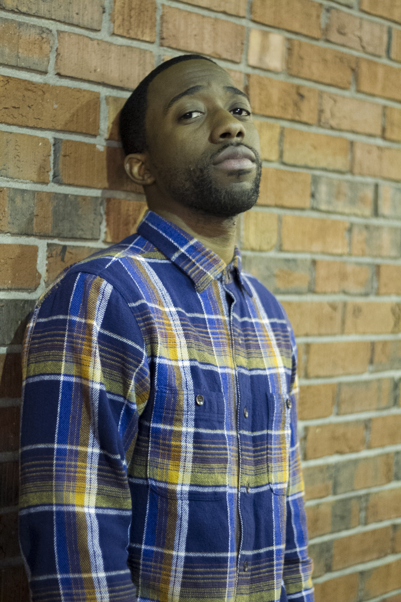

Kervens Gertilus
Contact Me

Summary
Highly movtivated engineer looking for an oppertunity as a Full stack developer.
Education
- Concordia University (Canada)- Masters Degree (2016- 2018)
- Concordia University (Canada)- Bachelors of Science Degree (2009 - 2012)
- Suffolk County Community College (N.Y.) - Associates Degree (2006-2009)
- John Glen High School (N.Y.)- High School Diploma (2002 - 2006)
Skills
- Html
- CSS
- Javascript
- Node
- MongoDB
- Flutter
- React
Certification